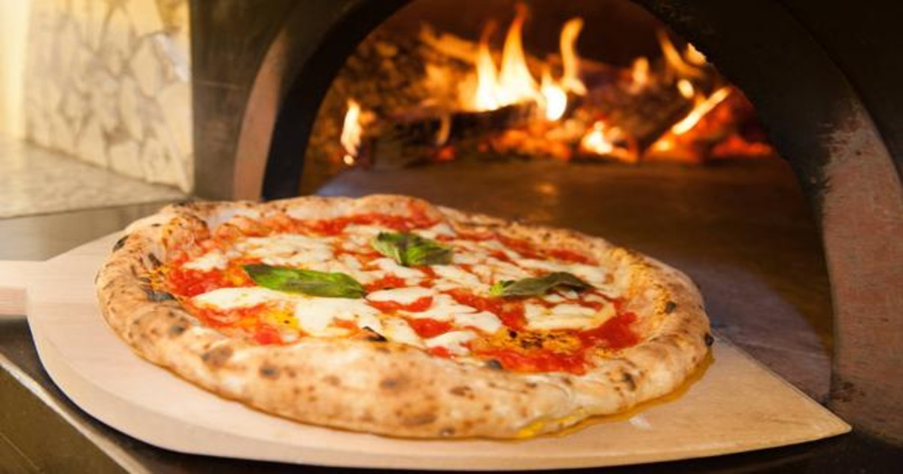

La cocina de Renzo y otra gente mas
Pizza Cacera
Un clasico italino al alcance de todos

Imgredientes
- 1/2 kilo de harina
- 25gr de pan de levadura fresco
- 1/2 cucharada de sal
- 4 cucharadas de aceite de oliva
- 1 cucharada de azucar
- 1 taza de agua tibia
Como hacer la Pizza
- En un bol o taza colocar la levadura y media taza de agua tibia
- En otro bol, colocar la harina y mezclarla con la sal.
- Dejar descansar la masa para pizza unos 15 minutos
- Estirar la masa hasta lograr un círculo.
- Llevar a un horno fuerte unos 6 minutos.
- Agregar una cucharada abundante de salsa de tomate y llevar al horno 2 minutos más.
Listo! Puedes dejar que se enfríe y llevarla al congelador para usarla en otro momento o ponerle el topping que quieras y hacerla en el momento!
Para mas recetas de pasteleria: Buscar en Google
ó buscar en nuestras recetas: Receta de Bizcochuelo